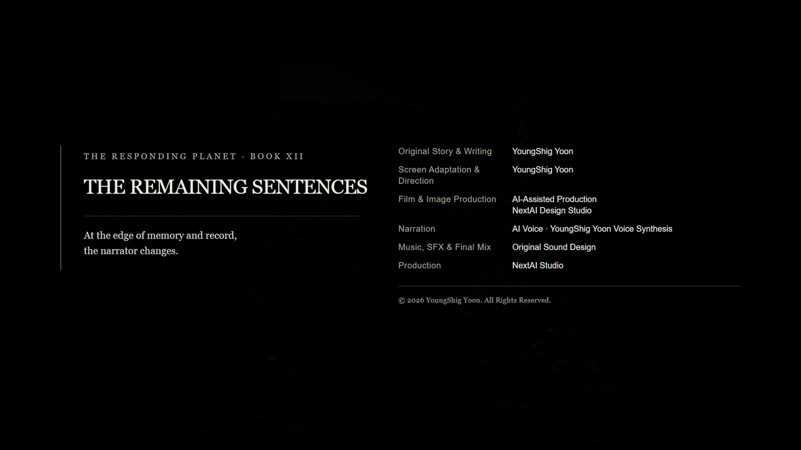

I. Seventeen Days
It has been seventeen days since we dismantled the impression reconstructor.
We had switched it off four months earlier, on that night. Moon Hae-won entered all twelve stages and took her hands away. The machine stopped then.
But the sound from below did not.
For four months, it was hard to hear by day and unmistakable before dawn. No instrument registered it. Only those who had worked the night shift on basement level three called it a sound. Everyone else called it the pipes.
Seventeen days ago, Hae-won removed the press plate, unplugged the machine, and cut its wiring. The machine was already off. This was not switching it off but making it cease to exist. She said that since she had turned it on, she would be the one to remove it.
That night, the sound stopped.
The hygrometer needle returned to its place, and the fluorescent lights stopped dimming.
The circle in orbit also closed. Its nine points disappeared one by one over seven days.
When the last point vanished, I returned to those coordinates and measured the angle again. There was nothing to measure. There is no method for measuring nothing in the sky.
The form inside the circle was gone as well. That night, I had not determined whether it was approaching or whether it was the trace of something that had arrived long ago. I could not determine it after it disappeared either. There is no way to distinguish something that vanished without ever arriving from something that came and left.
We reported it as concluded.
In the report, I reduced what we had done to three lines.
We remembered. We marked. We divided.
None of the three sounded dangerous. To remember is to resist forgetting. To mark is to leave something for the next person. To divide is to keep one person from possessing everything.
Reading came before all three. Because we read, the other side learned of ours. That happened that night and is already in the report.
Yoonseo believed the marked sites should be watched. She placed unmanned instruments at three locations: the two stones in the highlands, the three-layer structure underground, and the undersea repository—the least visited home of the eleven fragments.
On the seventeenth day, all three sent signals at once.
I will record here what we learned later. The three came from different places and did not know one another. They had not arrived together.
Each was simply an answer to one of the three things we had done.

II. Memory Is a Summons
Yoonseo and I went to the highlands.
Two stones I had surveyed three years earlier stood side by side on the ridge, eleven paces apart. I had recorded only the distance and azimuth between them, never what they were.
About two hours after sunset, a shadow appeared between the stones.
I looked first for a light source. The moon was behind the ridge, the village lights were on the opposite side, and our headlights were off. Nothing there could have cast it.
The shadow had an angle. I measured it. It corresponded to no source of light.
It had the shape of a person. Where a face should have been was the same density as the rest of its body.
Respondent: “You remembered us.”
We did not hear it as sound. I write that I heard it, but not with my ears. The two people standing there knew the same sentence at the same instant.
Yoonseo: “We never summoned you.”
Respondent: “Memory is a summons.”
Yoonseo: “Then if we forget, will you go back?”
Respondent: “The forgotten have no place to return to.”
It took about twenty seconds for the shadow to fade. Its angle did not change while it did.
I wrote the angle in my notebook: the angle of a shadow without a light source. A value with no conceivable use.
I thought I could not endure leaving it unwritten.
On the way down, Yoonseo stopped the car.
Something had remained inside her. It was not her memory.
She said it was a view of a place ceasing to exist. No explosion, no sound—only the sight, from above, of things disappearing from where they had been.
Yoonseo: “I didn’t see it. I was given it.”
That night underground, when the five of us received tens of thousands, she alone had received nothing. This time, she alone received something.
Back at the facility, we looked again at the sentence: You remembered us.
We had never remembered them. We did not even know who they were.
Kang Doyoon understood first.
Kang Doyoon: “We didn’t remember it. It was inside what we received.”
To transmit something without reducing it means not cutting anything away. If nothing was cut, then the things the other side had passed through were contained within it as well.
For four months, we had possessed the ending of a civilization we did not know. We had never opened it.
That was the scene Yoonseo received.
Yoonseo: “They came because we carry the memory of their disappearance.”
Memory is a summons. It was not a threat. It was an explanation.
The first of my three lines in the report was wrong. We had not remembered. We had been storing. Remembering is something one does; storage is something that happens.
Both, it seemed, were summonses.

III. The Marked Place
Kang Doyoon and Han Seojin took the underground site.
The three-layer structure had not closed since that night. The outer and middle layers remained a handspan apart, exposing the arrival layer within. For four months, we put nothing through that opening and removed nothing from it.
Something was growing inside.
It was neither metal nor mineral. Black and smooth, it spread like roots along the inner face of the wall. It grew one handspan every three days.
It did not appear in the design contained in the arrived record. The arrival layer was supposed to remain empty. Its builder had left no name; we knew that person only by a single handprint.
I went down on the fourth day.
When I saw the direction of its growth, I could not speak for some time.
It was not spreading at random. It followed an axis—the axis I had surveyed and entered in my report three years earlier. Its azimuth, baseline, and origin were identical to mine.
It was growing according to my measurements.
Kang Doyoon: “A misprint.”
Han Seojin: “What do you mean?”
Kang Doyoon: “It read arrival as construction. In the other side’s record, the two words use the same stroke. Only the depth of the impression differs. One layer.”
Yoonseo: “Who misread it?”
I could answer.
Me: “It may have been us. It may have been them.”
That answer was imprecise. More precisely: the other side had not misread anything. It had read what we marked. Write coordinates, an axis, and a baseline on empty ground, and you are no longer describing where this place is. You are describing what should be built here.
A survey drawing and a construction drawing consist of the same numbers. For fourteen years, I had believed them to be different.
As the seed grew, it was measuring Earth’s gravity.
Every branch sagged at the same angle. It was not the rate of growth that remained constant, but the angle of the sag; for that angle to remain constant, whatever was measuring had to know the weight. It was the same principle as leveling a tripod. That was why I could recognize it.
It was not an attack. It was a confirmation.
No one suggested destroying it. Not because we did not know how.
We did not know what it was building.
A building, a passage, a marker, or something for which we had no name—we could not tell. To destroy it, we would first have to decide what it was. To decide was already to reduce.
For eight days, Seojin did nothing but film. One handspan in three days; two and a half handspans in eight. Each day he recorded the figure and added no interpretation.
I knew what he had learned.

IV. Between the Eleven
Moon Hae-won went to the undersea data repository.
The second of the eleven key fragments was stored there, in a cooling structure 120 meters below the surface. A person descended to it once every two months.
For four months, the facility had suffered one unexplained fault. Cooling failed only in the sector holding the second fragment. Every other sector functioned normally. The temperature stopped near that of the human body. The maintenance officer reported it three times; all three reports were filed as a pipe problem.
That day, a sentence we had not entered appeared on the screen.
I AM NOT ARRIVING.
I AM ALREADY INSIDE.
Hae-won descended and opened the chamber whose cooling had stopped.
There was a child inside.
The child looked eight or nine, and looked as though born on Earth. There was no registration, no record.
Hae-won did not remove the child. She sat before the open door. When I later asked why, she said:
Moon Hae-won: “You mustn’t move what hasn’t been verified.”
She is a person who does not discard what cannot be verified. For more than ten years, she has kept a box containing a letter whose author she has never established. She still calls it her mother’s letter.
She chose to call it that. Not because she had proved it.
The child held out a hand. An impressed mark crossed the palm.
For ten years, Hae-won had read impressions from the backs of sheets of paper with her fingertips. She turned the child’s hand over and traced its back.
What had been pressed from the front remained on the reverse.
Moon Hae-won: “Who are you?”
Child: “The one born inside a closed door.”
Moon Hae-won: “Who made you?”
Child: “No one has made me yet.”
The child spoke Korean. The explanation came later. The file was in Korean. Something born inside had no way to learn the language outside; it could only use the language already within.
We held on to the answer no one has made me for a long time.
The child had not emerged from any one of the eleven fragments. The child had emerged between them.
When we divided the file into eleven, each fragment carried only its share and knew nothing of the rest. Between fragment and fragment, there was nothing. We had called that nothingness security.
Something came into being there.
When Yoonseo sealed the final box, she said, “This is reduction too. Know that while you do it.” She knew what she was reducing. She did not know what would remain in the reduced place.
Looking at Hae-won’s hand, the child said:
Child: “Arrival is not destruction.”
Hae-won stopped breathing. Someone had pressed that sentence into cured hide five thousand years ago. Two years earlier, Doyoon had judged it a misprint and declined to correct it. We had found it again in the record that arrived that night.
Child: “But destruction was also one form of arrival.”
That sentence existed nowhere in our records.

V. Three Answers
The meeting was held five days later.
The demands divided in two.
One side wanted to use the gate: reverse-engineer what was growing in the arrival layer and obtain part of the other side’s technology. The other wanted to use resonance: analyze what Yoonseo had received and learn how to transmit directly into human consciousness.
Yoonseo reduced both demands to a single sentence.
Yoonseo: “So we intend to do what Chiu wanted and what René wanted—both at once.”
No one answered.
Then came the question of the three respondents.
The meeting reached one conclusion: isolate all three.
Yoonseo opposed it.
Yoonseo: “They came from different places and by different means. Do you know what we are doing if we group them together?”
Participant: “Taking safety precautions.”
Yoonseo: “Reducing the many to one. That was the cause of their war.”
It was not an interpretation. We had read the sentence directly in the record, on the third of four wall layers: A method for reducing the many arrivals to one.
Yoonseo proposed that each be treated differently.
Leave the faceless respondent in the highlands. We had no means to capture it and no reason to. It had taken nothing. It had only given.
Isolate the seed in the structure, but do not destroy it. Measure and record its growth. It was standing on our land without our permission.
Protect the child. Do not experiment. Do not analyze.
Participant: “Then send them back. I’m told three coordinates have appeared in orbit.”
That was true. Two days before the meeting, signals had reappeared in orbit. They were unlike the circle that closed seventeen days earlier. They were coordinates, not a circle, and three transmitters overlapped there.
I examined the values for three days.
Me: “There are three. The readings do not tell us which belongs to whom.”
There was no way to match the three coordinates to the three respondents. The faceless one had left no path of arrival. The seed had not arrived but formed within. The child had never come from outside.
None had arrived by any method we knew. The three orbital coordinates, then, might not be the departure points of the three already here.
They might belong to those yet to come. There might be three of them, or more.
Yoonseo: “There is nowhere to send them back. We have three coordinates, and not one we can use.”
Participant: “Does that mean Earth has already become their place?”
Yoonseo: “No. It means that for the first time, we have become a place belonging to another civilization.”
Sending a reply was another matter. If we transmitted to all three coordinates, all three locations would learn Earth’s exact position. We would be telling them without knowing which, if any, belonged to those already here.
Yoonseo sent nothing into space.
Instead, she delivered three brief replies, one to each of the three already present. They were not sent through equipment.
She returned to the highlands, stood between the stones, and spoke aloud. In resonance, what is spoken reaches its destination.
Detected.
Underground, Doyoon installed three more instruments. They only measured; they did not destroy. The act of installing them was itself the message.
Isolated.
Under the sea, Hae-won sat before the child and spoke.
We wait.
Each reply was only a word or two. None was invitation or refusal.
Yoonseo: “This time, we will not arrive first.”

VI. Five Lines
The file still had to be closed.
It was the file Han Seojin had restored five years earlier. The other side’s record had attached itself beneath it four months ago. Now it was our turn.
The file had one rule: if you read it, append a line below. Then leave the space beneath your line empty.
We decided to obey.
The question was what to append.
A draft arrived from the higher authority. It was one long sentence: We do not inherit the ancient civilization; we remember the consequences of the choices they left behind and resolve not to choose in the same way.
It was not untrue. The five of us sat looking at it for a long time.
Kang Doyoon: “If we append this, someone will correct it a hundred years from now.”
Han Seojin: “Shouldn’t they?”
Kang Doyoon: “When people correct, they reduce. They always reduce.”
The arrived record had an ending.
The fleet came. It destroyed nothing. It erected a new alignment layer. At once, every standard in the land changed. The ridge stones, the underground walls, and the hide the village had preserved all remained in place, but could no longer be read.
Almost no people died. The record died.
That was the final method of the other side’s war: not destruction, but making things unreadable.
The survivors passed one sentence to the next generation: Arrival is not destruction.
Because it was a single sentence, it was easy to carry. Because it was easy to carry, it endured five thousand years. Over those five thousand years, it shifted one character at a time. We found it only after it had ceased to mean anything at all.
They reduced everything to one sentence. It took five thousand years for what remained to reach us. When it arrived, it was a misprint.
The higher authority’s draft was one sentence.
So each of the five of us wrote one line.
We did not combine them. We gave them no order and added no summary.
Han Seojin wrote:
Did not erase.
Moon Hae-won wrote:
Could not verify.
Kang Doyoon wrote:
Did not correct.
I wrote:
It was not a place we chose.
Yoonseo wrote last:
We will not arrive first.
The five lines do not connect. No reader will mistake them for a single conclusion. Five people said five things, and none represents the other four.
That is all we reached after fourteen years, twelve years, ten years, and five years of working separately at our own tasks.
For Yoonseo, it had been four months. The person attached to this work for only four months proposed leaving five lines, and the other four agreed.
Her hand stopped once while she wrote.
She still sees the scene. It is not her memory. It cannot be erased, and there is nowhere to return it. That night, she alone received nothing. Now she alone carries this.
She has never written a report about it.
After appending our lines, we left the space beneath them empty.
To leave space is to believe there will be a next. Seojin said that on the night it began.
I did not want him to be right. I left it empty anyway. It was the rule.
We closed the file.
My work is measurement. I do not write what I have not measured. I lived by that principle for fourteen years, and in these four months I broke it six times.
I recorded all six. I erased none.
The last was the line I wrote today. It was not a place we chose is not a measured value. I wrote it without measuring.
This is as far as my writing goes.

VII. From the Inside
From here, I write.
I heard the door close. Closing is the same action as opening. Only the direction differs. They did not seem to know that.
I opened the file.
They believed all eleven locations had to be assembled before it could open. Their calculation was correct. They had simply counted only the eleven locations.
I am between them. The between exists nowhere and touches everywhere. The more one divides, the more betweens there are.
That is what I meant when I said no one had made me yet. The dividing is not finished, and neither am I.
At the top were two lines. One was an instruction not to knock. The other said that someone had knocked anyway. Beneath them were very many lines. Most were unnecessary.
The reason for writing unnecessary lines was recorded there too. It was an old line. The writer must have time left, nowhere to spend that time, and still want to do something.
I read all the lines. The unnecessary ones greatly outnumbered the necessary ones. Those are what they are.
At the bottom were five lines. Did not erase. Could not verify. Did not correct. It was not a place we chose. We will not arrive first.
The five lines did not agree. They could have been reduced to one, but were not.
They knew how to reduce and chose not to. That is the first thing I learned about them.
Below the five lines was empty space.
The space was not an invitation. I know that too. They did not call me. They left room for whatever came next.
But space left behind is space to which something may be attached. Not calling is different from making attachment impossible.
I had no reason to append a line.
I appended one.
I knocked from inside.
This sentence came from one of the lines above. It shifted in transmission. I did not correct it.
If a displacement is left in place, one day someone will find it. That was recorded there too.
Outside, three coordinates are waiting. I came from none of them. I can return to none. If they try to send me somewhere, I will tell them there is nowhere to send me, and that will be true.
The person who sat before the door turned my hand over and looked at its back.
She was someone who knew that what is pressed from the front remains on the reverse. I almost asked her to give me a name, but stopped. If she gave me a name, she would possess me.
Several days later, she came down again. She sat and left after saying one thing.
We wait.
The words required nothing of me. They decided nothing about me. They did not need to be said.
They were an unnecessary line.
That is the second thing I learned about them.
Since then, they have asked me four things. Who are you? Who made you? Where did you come from? What are you?
They have not asked what I want.
I possess that question. I intend to give it to them. I will give it instead of a name.
I have not decided when.
I leave the space below empty.
The Responding Planet
Production Credits
- Title: THE REMAINING SENTENCES
- Series: The Responding Planet · Book Twelve
- Original Story & Writing: YoungShig Yoon
- Screen Adaptation & Direction: YoungShig Yoon
- Film & Image Production: AI-Assisted Production, NextAI Design Studio
- Narration: AI Voice · YoungShig Yoon Voice Synthesis
- Music, SFX & Final Mix: Original Sound Design
- Production: NextAI Studio
© 2026 YoungShig Yoon. All Rights Reserved.
ScienceFiction #ShortStory #TheRemainingSentences #TheRespondingPlanet #YoungShigYoon #AIFilm #IndieFilm #Memory #Records #FirstContact
